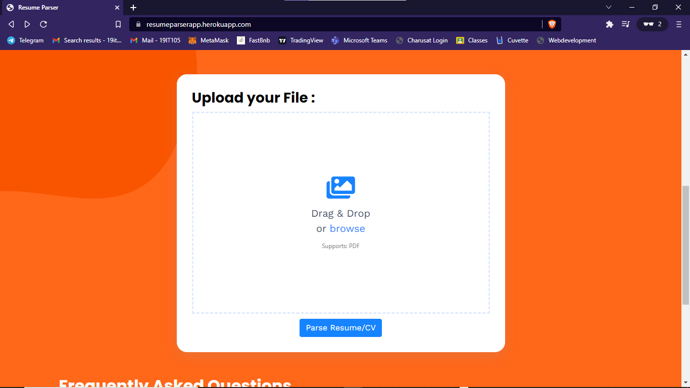

Abstract
Natural language processing is used to parse information from a resume, locate keywords, cluster them into sectors depending on their keywords, and finally provide the most relevant information to the user based on keyword matching. The user must first upload a resume to the web site. The resume parser extracts all of the relevant information. After the user confirms, the web app displays the data that the algorithm has retrieved.
Keywords: Resume Parsing Software, Resume, Parsing using NLP, NLP
Introduction
Every day, corporate firms and recruitment agencies go through a large number of resumes. This is not a human task. There is a need for an automated intelligent system that can extract all of the critical information from unstructured resumes and convert them all to a similar structured format that can then be ranked for a specific employment post. Name, email address, social profiles, personal websites, keywords, and the resume cluster are all parsed information (ex: computer science, human resource, etc.). The parsed data is subsequently saved in a database (in this case, NoSQL) for future use. Resumes are more structured than other unstructured material (email body, web page contents, etc.). Information is organised into different groups.
Each set comprises information on the person's contact information, employment experience, and educational background. Despite this, resumes might be difficult to decipher. This is due to the fact that the sorts of information, the sequence in which they are presented, and the literary style in which they are written differ. They can also be written in a variety of formats. '.txt', '.pdf', '.doc', '.docx', '.odt', '.rtf', and so on are some of the most frequent. The model cannot rely on the order or kind of data to effectively and efficiently extract data from various types of resumes.
History of hiring
Throughout the years, the hiring procedure has changed. Companies would promote job openings in newspapers and on television under the first generation hiring paradigm. Applicants would send their resumes in via mail, and they would be hand sorted. After the applications have been shortlisted, the hiring staff will contact them for additional rounds of interviews. This was, without a doubt, a time-consuming procedure. However, as the industries grew, so did the demand for workers. As a result, businesses began outsourcing their employment processes. Hiring consultancies were established. These agencies asked applicants to post their resumes in certain forms to their websites. After that, the agencies would look over the structured data and provide a shortlist of prospects for the organization. This method had a significant flaw.
Result and Discussion
An web app of resume parser contains of two
modules:
I. Home Page / Input Resume Page
II. Result Page
Technologies used: Flask
Language: Python
Model: Spacy pre trained
Home Module
Resume Input mode
Preview Module
Structured Data from PDF
Conclusion
We were able to convert several resume formats to text and extract crucial information from there. We were also able to harvest terms from several social networking sites, such as Stack Overflow and LinkedIn, and detect similarities between them, allowing us to define the resume's genre (e.g., computer science, management, sales, human resource, and so on). Future work will include grading resumes and analysing information about candidates from social media sites such as Facebook and Twitter so that we can make more accurate and authentic decisions about whether or not to give the candidate a job.